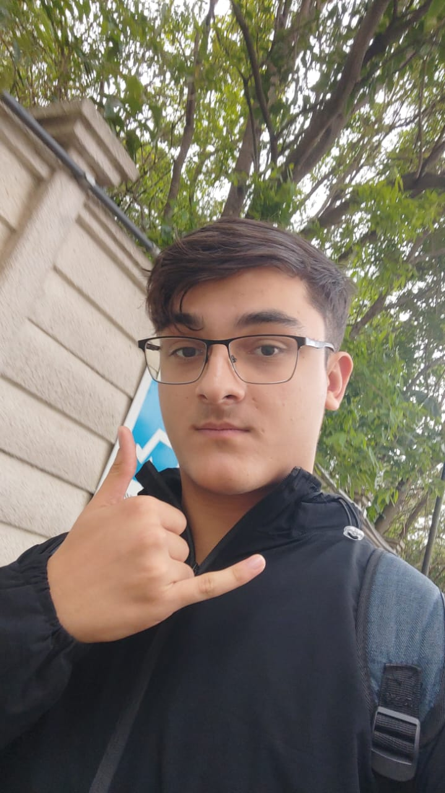

A EcoWeb é uma iniciativa de 4 jovens, focada no meio ambiente em construir um mundo melhor e mais saldavel para todos.
Fale conosco
A EcoWeb é uma iniciativa de 4 jovens, focada no meio ambiente em construir um mundo melhor e mais saldavel para todos.
Fale conoscoOtavio, o lider do projeto. Tem 15 anos de idade e é apaixonado por tecnologia e sustentabilidade, sempre buscando maneiras de integrar inovação com consciência ambiental e problemas contemporaneos como os efeitos do avanço tecnologico na naturezaa.
